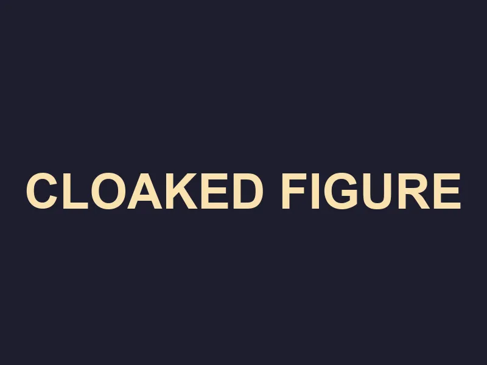

The Tithe of Blood
Sector: Underhive Maintenance

Shadows are your only allies here. You slip through the maintenance shafts, avoiding the Ork patrols. The exit is close, but the darkness hides many teeth.
Move silently.
Use a distraction.